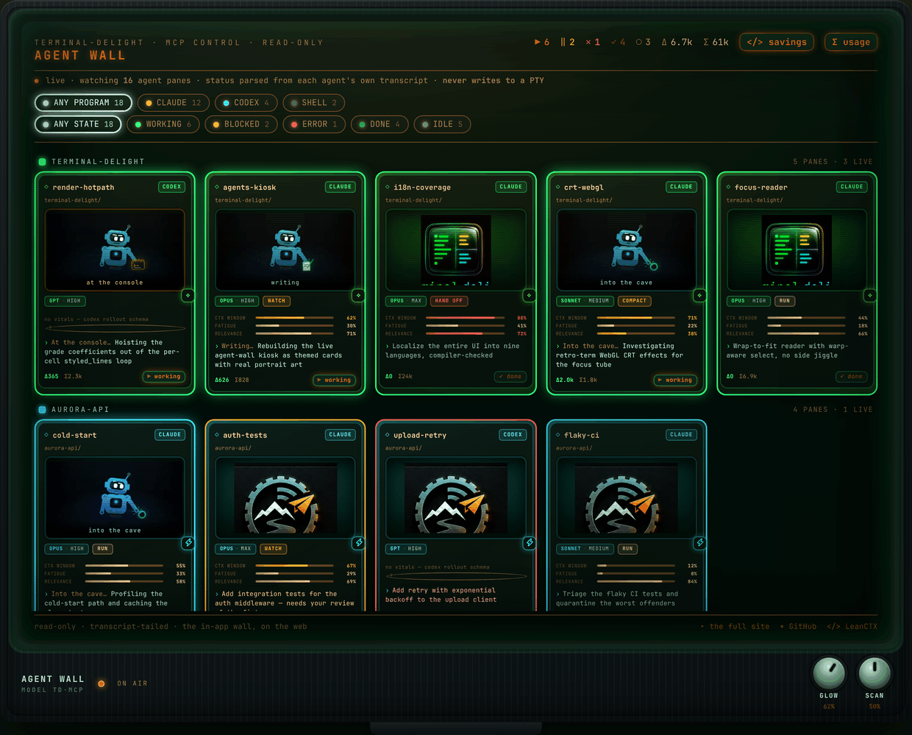

Omarchy hands every window the same colour vocabulary and the same keyboard. Terminal Delight takes it literally: panes wear the desktop's own themes, one keystroke paints the whole workspace, and the tab bar tells you which agent needs you — from across the room.
Everything below is live. Pick a theme and the page repaints itself through the exact role-to-slot mapping a painted pane uses.
The paint overlay carries two shelves. One holds Terminal Delight's own
colour sets. The other holds every Omarchy theme installed on the
machine — /usr/share/omarchy/themes plus
~/.config/omarchy/themes, user themes shadowing stock ones
by name, the same precedence Omarchy itself applies. This page wears
eight of them, one per stop, so the argument can be read by scrolling;
the overlay on your own box lists whatever you have installed.
A palette replaces the pane's whole colour table and leaves its texture alone — scanlines, bloom, curvature, font all survive. So a terminal can be tokyo-night like everything else on the workspace and still be a CRT.
$ cargo test palette Compiling terminal-delight v0.2.0 test the_ansi_table_is_omarchys_own_terminal_template ... ok test a_user_theme_shadows_a_stock_one_by_name ... ok warn 2 palettes carry no `cursor` role fail 0 roles → background muted accent bright_* $ █
The same six hues, re-read from whichever theme is selected above.
Omarchy publishes each theme as a colors.toml of named
roles, not an ANSI table. Turning roles into the sixteen terminal
slots is a decision, and getting it wrong is how a "matching" theme
ends up subtly not matching.
So the mapping is taken verbatim from Omarchy's own terminal
template, default/themed/alacritty.toml.tpl: normal
black is background, bright black is muted, the cursor
is bright_foreground. A pane painted tokyo-night
renders colour for colour the way alacritty, foot and ghostty do
under the same theme — and there is a test that fails if it ever
stops doing so.
terminal-delight ctl paint on raises the palette over every
pane at once — from the 🎨 bar widget, a Hyprland bind, or any script.
It is mouse-optional and reads like Omarchy's own picker: the focused
pane is spotlit — a thin scrim and a bright frame on it, a heavy
scrim on everything else — so which terminal you are painting is
answered from across the room.
omarchy-td-palette, raises the same overlay.army badger cherry ember glacier nuclear pineapple retro tide
violet wood — rather than a private vocabulary. Five sets took the
desktop's name for the same colours when the two lists were reconciled.
Renames are display-only: saved themes serialise the variant, not the
label, so nothing you already picked moved.
Omarchy is a desktop you drive with agents. A wall of them is only useful if you can read it at a glance — so every tab carries a badge strip: one badge per agent pane that has something to say, in pane order, so a badge keeps its slot as long as the agent holds its state.
↑ the real mascot art, the real timings. An idle agent shows nothing — a quiet roster must not crowd out the tab's own name.
Stopped, waiting on a human. The mascot stands steady while its yellow HEY layer blinks as a hard square wave — deliberately not a throb, because onsets grab the eye and a blink gives you two per cycle.
Mid-turn. The robot alone, breathing on a bounce-eased curve and never falling to zero — gently but firmly, instead of strobing.
Finished clean, and nobody has looked yet. Steady rather than pulsing: the past needs a glance, not a heartbeat. Clears when you visit the pane.
Finished against a wall — an error banner was on screen when it rang. Same steady treatment, different answer.
Exactly one glyph per agent, loudest state first: waiting on a human outranks working, which outranks a finish nobody has looked at yet. Let a single pane contribute two badges and the count stops meaning anything.
The same roster the tab bar summarises is available over MCP, so an
agent — or a browser on your phone — can watch the wall.
list_panes reports who is running where.
pane_events tails an agent's own transcript rather than
the rendered screen. grep searches every exposed pane's
scrollback at once, which is how you find where an error is
across eighteen panes.
get_pane_config and set_pane_config read
and change appearance in uniform 0–100 percents. Setting
outer re-grades every pane that inherits it — the whole
wall in one call.

Focus any terminal tile on the workspace — foot, Alacritty, kitty,
Ghostty, org.omarchy.* — and press the bind. The session
migrates into a Terminal Delight pane: idle shells re-open at
their working directory, claude and codex
agents resume by session id, tmux attaches re-attach.
Anything else in the foreground — vim, htop — is refused, and nothing is
closed. With no adoptable window running, a fresh one is seeded to
receive the session. td-send --dry-run prints the plan
without touching anything.
The source window is closed only after the destination pane has the session. A refusal leaves your terminal exactly as it was.
An agent is resumed by its session id, not restarted — the conversation comes with it.
The installer writes o.bind(…) into
~/.config/hypr/bindings.lua. On plain Hyprland, bind it
yourself — one line.
When an agent pane rings while you are not looking at it,
Terminal Delight posts a desktop notification through
notify-send — which Omarchy's Quickshell daemon renders,
actions and all. The title is tab → pane. The body is a
recap of the agent's last words.
Clicking it zips you there: the window is focused over the Hyprland socket, the tab activates, the pane takes focus. Both the ≥0.56 Lua dispatcher and the legacy string form are spoken.
The recap is read from the agent's own transcript — the grid under a status line is a poor summary of a finished turn.
The terminal does not need to know about the desktop, and the desktop does not need to know about the terminal. What they share is a colour table and a window address.
GPU-native, Rust, tiling panes, per-pane grading. Reads Omarchy's themes; never writes them.
The Omarchy theme, the eleven-variant set, the compositor curve,
and td-tint.
Terminal Paint — the 🎨 widget that raises the picker over every terminal tile on the workspace.
Runtime dependencies are checked by the scripts, which fail with a
message rather than half-installing: Hyprland
(hyprctl), jq, and optionally
omarchy-notification-send — notifications are skipped
without it.
td-sendscripts/install-send-hotkey.sh
td-send --dry-run
terminal-delight ctl paint on
Reverting is symmetric — scripts/install-send-hotkey.sh
--uninstall removes the binding. On plain, non-Omarchy Hyprland,
bind it by hand instead:
bind = SUPER ALT, T, exec, td-send